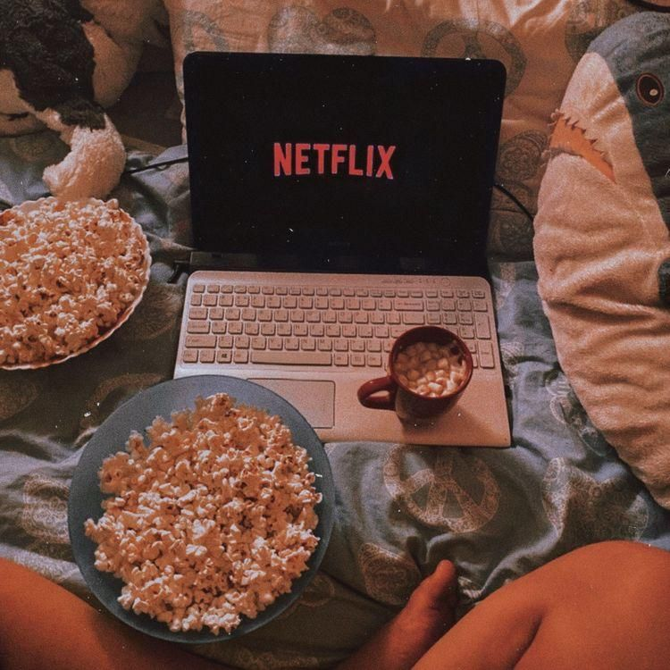

My Favorite Things
Hey there, lovely visitor! 👋 Welcome to my little corner of the internet where I'm about to spill the beans on all things that light up my life. Get ready for a virtual tour through my favorite things that make me smile, groove, and appreciate the beauty of this crazy world.
Movies
Getting lost in cinematic worlds is a thrilling escape. Whether it's classic romance or mind-bending sci-fi, movies have a special place in my heart. Picture this: cozy blankets, dimmed lights, and a screen filled with captivating stories. I'm a sucker for comedy movies that tickle my funny bone and action-packed thrillers that keep me on the edge of my seat. If a film can make me laugh and jump in the same hour, it's a win-win.
Grooving to the Beat:
Music is the heartbeat of my days. From the soul-soothing acoustic melodies to the foot-tapping indie pop, I've got a playlist for every mood. If you spot me working while bobbing my head to the rhythm, you know I'm in my element.

Strings and Melodies:
My heart sings in harmony with the strings of a guitar. Strumming away isn't just music; it's a dialogue between my soul and the universe. The way those notes blend into an enchanting melody feels like pure magic in my hands.

Fashion: Where Art Meets Identity:
Outfits are my canvas, and each one paints a unique story. From sleek minimalist designs to daring prints that shout "confidence," fashion lets me express myself without saying a word. Because why settle for a mundane look when you can make a statement?

Jet-Setting Wanderlust:
Ah, the thrill of exploring new horizons! Whether it's the tranquil embrace of a beach or the bustling heart of a city, traveling fuels my soul. Every journey is a chapter in my storybook of experiences, and I'm all about collecting passport stamps and cherished memories.

Beach Bliss and Beyond:
You'll often find me chasing sunsets on sandy shores, where the gentle waves serenade my thoughts. The beach is my sanctuary, a place where I can unwind, reflect, and embrace the beauty of nature. After all, every shell tells a tale, and the ocean whispers secrets.

Caffeine Chronicles: Coffee & Tea Tales:
Be it an early morning boost or a midday pick-me-up, the allure of coffee and the comfort of tea are constants in my day. A steaming cup isn't just a beverage; it's a hug in a mug, a moment to savor life's simple pleasures.
So there you have it, a glimpse into my world of favorites. Feel free to share your own loves—I'm always up for swapping stories about movies, music, fashion, and faraway places. Until then, keep chasing sunsets and grooving to life's melodies! 🌅🎶